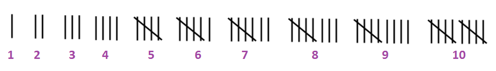

Statistics
Statistics is the science of collecting, organizing and analyzing data for any given purpose. It helps us to reduce large and scattered data to an understandable level, thereby enabling us to make decisions in the face of uncertainty.
Array
This is the arrangement of raw numerical data in ascending or
descending order of magnitude. For example, given the data: 3, 5,
10, 0, 1, 8, 10, 4, 2, 6.
Ascending Order: 0, 1, 2, 3, 4, 5,
6, 8, 10, 10
Descending Order: 10, 10, 8, 6, 5, 4, 3, 2, 1, 0
Frequency & Tally
Frequency: this is the number of occurences of any value in a given data while tally is the stroke representation of frequency.

Example: 20 pupils were asked
about their favourite type of movie
Solution
The centrality and spread of any given data are of great importance to statistians.
Measure of Central Tendency (measure of location)
Measure of central tendency can be thought of as a measure which gives the location of the "center" of the data. The most commonly used ones are the mean, media and mode.
Mean
The mean (arithmetic mean) denoted by
x (x bar) of a set of
n numbers x1, x2 ... xn is
x = (x1,
x2 ... xn) / n
x = ∑x / n (where ∑
is summation)
Examples:
1. Find the mean of the numbers, 1, 3, 4, 8, 8, 4, 7
Solution:
Mean (x) = ∑x / n
= (1 + 3 + 4 + 8 + 8 + 4 + 7) / 7
= 35 / 7
= 5
2. The weight of 5 girls in kg are 48, x, 52, 50 and (2x - 5). If their average weight is 47kg. Find the weight of the girl that has the heaviest weight
Solution:
Note: Average weight = Mean
Average weight = sum of weight / number of grils
47 = (48 + x + 52 + 50 + (2x - 5)) / 5
Cross Multiplying
47 X 5 = 150 + x + 2x - 5
235 = 145 + 3x
Collect like terms
235 - 145 = 3x
90 = 3x
Divide both sides by the coefficient of x (i.e 3)
90/3 = (3x)/3
So, x = 30
Next, we list the weight by substituting the value of x
48, 30, 52, 50, (2 X 30 - 5)
= 48, 30, 52, 50, 55
Thus the heaviest weight is 55kg.
Mean of frequency distribution
For any given data say x1, x2 ... xk
that occur f1, f2 ... fk times
respectively, then the mean
x =
(f1x1 + f2x2 + ...
fkxk) / f1 + f2 ... +
fk
= ∑fx / ∑f
Examples:
1. Calculate the mean of the distribution of the test scores below:
| Scores | 30 | 35 | 40 | 45 | 50 |
| No. of student | 3 | 21 | 46 | 18 | 12 |
Solution:
Mean = ∑fx / ∑f
| Scores(x) | Frequency | fx |
|---|---|---|
| 30 | 3 | 90 |
| 35 | 21 | 735 |
| 40 | 46 | 1840 |
| 45 | 18 | 810 |
| 50 | 12 | 600 |
| ∑f = 100 | ∑fx = 4075 |
Substituting
Mean = 4075 / 100
= 40.75
2. The mean of the frequency distribution shown is 1.5. Find the value of p
| x - value | 0 | p | 3 |
| Frequency | 2 | 3 | 1 |
Solution:
Mean = ∑fx / ∑f
| x - value | frequency(f) | fx |
|---|---|---|
| 0 | 2 | 0 |
| p | 3 | 3p |
| 3 | 1 | 3 |
| ∑f = 6 | ∑fx = 3 + 3p |
Substituting
1.5 = (3 + 3p) / 6
Cross Multiply
1.5 X 6 = 3 + 3p
9 = 3 + 3p
Collect like terms
9 - 3 = 3p
6 = 3p
Divide both sides by 3
6/3 = (3p)/3
Thus, p = 2
Median
The median of a set of numbers arranged in an array is the middle number (if their total number is odd) or the arithmetic mean of two middle numbers (if the number of the given values is even). Median divides the data into two equal parts.
Examples:
1. Find the median of the following numbers
6, 1, 0, 3, 10, 2, 5
Solution:
Arranging the value in the array in ascending order
0, 1, 2, 3, 5, 6, 10
The given values is odd, thus the median
= 3 (middle)
2. What is the median of the following scores
22, 41, 35, 63, 82, 74?
Solution:
First, we arrange the given data in descending order
82, 74, 63, 41, 35, 22
Since there are 6 scores (even)
Mean = (63 + 41) / 2 (Arithmetic mean of the two middle values)
= 52
Median (frequency distribution)
To get median for frequency data, we apply the idea of odd and even
numbers to get the median class or column among other columns or
classes. The two ways of getting our Median Class or Column are:
(a) Median class (column) = ∑f /2 if ∑f is EVEN
(b) Median class (column) = (∑f + 1) / 2 if ∑f is ODD
After we
have gotten our median class, then keep adding the frequency of the
given data till we get to the class or column where our number falls
in - that position is our median.
Examples:
1. A number of families were asked how many children they had. The results are as follows:
| No. of children | 1 | 2 | 3 | 4 | 5 | 6 |
| Frequency | 10 | 15 | 8 | 6 | 4 | 7 |
Calculate the median
Solutin:
∑f = 10 + 15 + 8 + 6 + 4 + 7 = 50 (is even)
Median Class = ∑f/2 = 50/2 = 25th class
Adding
frequency cummulatively till we get to 25th class
| No. of children | frequency | cummulative frequency |
|---|---|---|
| 1 | 10 | 10 |
| 2 | 15 | 10 + 15 = 25 |
| 3 | 8 | 25 + 8 = 33 |
| 4 | 6 | 33 + 6 = 39 |
| 5 | 4 | 39 + 4 = 43 |
| 6 | 7 | 43 + 7 = 50 |
So 25th class: 10 + 15 = 25 i.e 2nd row of the
table above
Thus Median = 2
2. The table shows the scores obtained when a fair die was thrown a number of times
| Scores | 1 | 2 | 3 | 4 | 5 | 6 |
| Frequency | 2 | 5 | x | 11 | 9 | 10 |
If the probability of obtaining a 3 is 0.26,
find the median
Solution:
First, we find x by principle of probability
Prob of 3 = fre(3) / ∑f
0.26 = x / (2 + 5 + x + 11 + 9 + 10)
0.26 = x / (37 + x)
Cross Multiply
0.26(37 + x) = x
Opening bracket
9.62 + 0.26x = x
Collect like terms
9.62 = 1x - 0.26x
9.62 = 0.74x
Divide both sides by 0.74
(9.62/0.74) = 0.74x/0.74
x = 13
Median Working:
∑f = 2 + 5 + 13 + 11 + 9 + 10 = 50 (which is even)
Median
Class = ∑f /2 = 50 / 2 = 25th class
Adding frequency cummulatively till we get to 25th class:
| scores | frequency | cummulative frequency |
|---|---|---|
| 1 | 2 | 2 |
| 2 | 5 | 2 + 5 = 7 |
| 3 | 13 | 7 + 13 = 20 |
| 4 | 11 | 20 + 11 = 31 |
| 5 | 9 | 31 + 9 = 40 |
| 6 | 10 | 40 + 10 = 50 |
So, 20 + 11 i.e 4th row of the table above
Thus,
median = 4
Mode
The mode of a set of numbers is that value which occurs with greatest frequency, i.e. it is the most common value
Examples:
1. What is the mode of the scores below:
1, 2, 3, 4, 4, 5, 5, 5, 4, 2, 2, 3, 4, 5, 5, 6
Solution:
Mode = 5 (it occurred most)
Mode of frequency distribution
2. Determine the mode of the distribution below
| x | 2 | 6 | 10 |
| f | 5 | 10 | 9 |
Solution:
Mode = 6 (it has highest frequency of 10)
Measures of Spread (variation/dispersion)
This is the degree to which data are scattered (dispersed) about its average value. The several measures of spread are the range, mead deviation, inter quartile range, variance and standard deviation.
Range
This is the simpliest measure of dispersion and it is defined as the
difference between the largest ans smallest numbers in the set.
Note that: Range is a poor measure of spread as it uses only two
extreme values
Examples:
1. The ages of 10 students in a class are:
15, 16, 15.5, 17, 14.9, 14.5, 14.1, 15.1, 15.2, 14.8
Find the
range of their ages.
Solution:
Range = biggest number - smallest number
17 -
14.1
= 2.9
2. A group of numbers are written in ascending order of magnitude as (x - 2), 8, (5 + x), 12, (x + 14). Find the range of the number.
Solution:
Range = biggest number - smallest number
= (x + 14) - (x - 2)
In ascending order, the first number is
the smallest while the last one is the biggest
= x + 14 - x + 2
= 16
Mean Deviation (M.D)
The mean deviation of a set of n numbers x1, x2
... xn is defined as:
M.D = (∑|x - x|)/n
Where x is the
mean of the numbers and |x -
x| is the absolute
value of the deviation if x from (x) and n is the number of digits given.
Examples:
1. Find the mean deviation of 2, 4, 6, 5 and 3
Solution:
Mean deviation = (∑|x -
x|)/n
But x is mean and
here mean = (2 + 4 + 6 + 5 + 3 )/5
= 4
| x | x - x | |x - x| |
|---|---|---|
| 2 | -2 | 2 |
| 4 | 0 | 0 |
| 6 | 2 | 2 |
| 5 | 1 | 1 |
| 3 | -1 | 1 |
| ∑|x - x| = 6 |
M.D = 6/5 = 1.2
2. Calculate the mean deviation of the numbers
0, -1, -3, -4, 5, 1
Solution:
Mean deviation = (∑|x -
x|)/n
But x is mean and
here mean = (0 + (-1) + (-3) + 4 + 5 + 1)/6 = 6/6 = 1
| x | x - x | |x - x| |
|---|---|---|
| 0 | -1 | 1 |
| -1 | -2 | 2 |
| -3 | -4 | 4 |
| 4 | 3 | 3 |
| 5 | 4 | 4 |
| 1 | 0 | 0 |
| ∑|x - x| = 14 |
M.D = 14/6 = 2.33
Mean Deviation (frequency distribution)
If x1, x2 ... xk occur with
frequency f1, f2 ... fk then the
mean deviation is given by
Mean Deviation = (∑f|x -
x|)/∑f where
x is mean
Example:
| Scores | 1 | 2 | 3 | 4 | 5 | 6 |
| Frequency | 2 | 5 | 13 | 11 | 9 | 10 |
The table shows the distribution of outcomes when a die is thrown 50 times. Calculate the Mean Deviation
Solution:
Mean Deviation = (∑f|x -
x|)/∑f where
x is mean
x = ∑fx/∑f = (1X2 +
2X5 + 3X13 + 4X11 + 5X9 + 6X10)/50
= 200/50 = 4
| x | x - x | |x - x| | f | f|x - x| |
|---|---|---|---|---|
| 1 | -3 | 3 | 2 | 6 |
| 2 | -2 | 2 | 5 | 10 |
| 3 | -1 | 1 | 13 | 13 |
| 4 | 0 | 0 | 11 | 0 |
| 5 | 1 | 1 | 9 | 9 |
| 6 | 2 | 2 | 10 | 20 |
| ∑f|x - x| = 58 |
M.D = 58/50 = 1.16
Variance & Standard deviation
The variance of a set of numbers x1, x2 ...
xk is given as
V = (∑(x -
x)2)/n
Where V is the variance and (x -
x)2 is the
square of the deviation from the mean while STANDARD DEVIATION is
square root of variance
S.D = √(V)
= √((∑(x -
x)2)/n)
If the numbers x1, x2 ... xk
occur with frequency f1, f2 ... fk
respectively, then,
Variance, V = (∑f(x -
x)2)/∑f
S.D = √((∑f(x -
x)2)/∑f)
Examples:
Find the variance and standard deviation of the set of numbers, 2, 5, 6, 3 and 4
Solution:
Variance = (∑(x -
x)2)/n
But Mean = 20/5 = 4
| x | x - x | (x - x)2 |
|---|---|---|
| 2 | -2 | 4 |
| 5 | 1 | 1 |
| 6 | 2 | 4 |
| 3 | -1 | 1 |
| 4 | 0 | 0 |
| ∑(x - x)2 = 10 |
V = 10/5 = 2
S.D = √((∑(x -
x)2)/n)
√2 = 1.4
2. Calculate the varience and standard deviation of the frequency distribution below
| x | 1 | 2 | 3 | 4 | 5 |
| f | 2 | 1 | 2 | 1 | 2 |
Solution:
Variance = (∑f(x -
x)2)/∑f
But Mean = (1X2 + 2X1 + 3X2 + 4X1 + 5X2)/(2 + 1 + 2 + 1 + 2)
= 24/8 = 3
| x | x - x | (x - x)2 | f | f(x - x)2 |
|---|---|---|---|---|
| 1 | -2 | 4 | 2 | 8 |
| 2 | -1 | 1 | 1 | 1 |
| 3 | 0 | 0 | 2 | 0 |
| 4 | 1 | 1 | 1 | 1 |
| 5 | 2 | 4 | 2 | 8 |
| ∑f(x - x)2 = 18 |
V = ∑f(x -
x)2/∑f
= 18/8 = 2.25
S.D = √V
√2.25 = 1.5